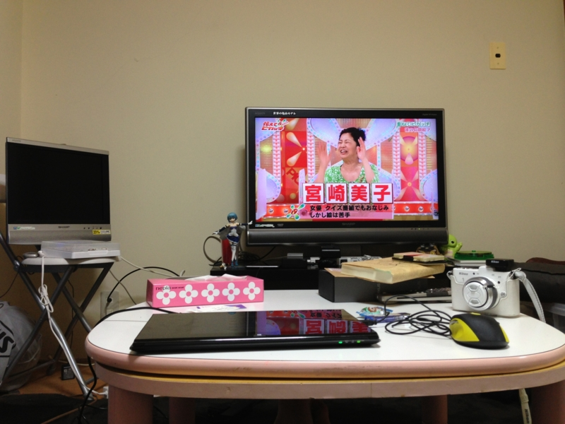
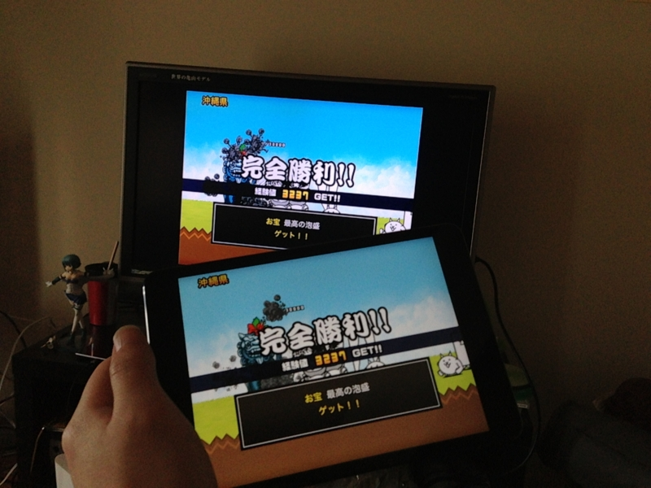
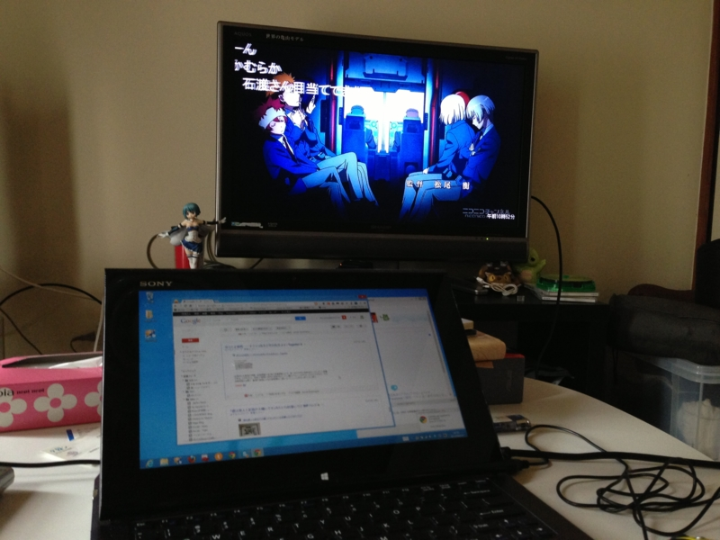

TV をゲットしたので思う存分大画面で「にゃんこ大戦争」をやってみた
公開日：
TV はあまり観ない。観なさ過ぎて、ときどき世間話についてけないほど。観たいサッカーの試合があるときに点ける程度で、それも近所で知り合いになったラーメン屋で観ることが多い。あ、春までは毎週『みなみけ』を観てたっけ。そんなわけで、うちはデジアナ変換でアナログ TV がまだ使えることもあり、2006年製の小さなアナログ液晶 TV がいまだに活躍していた。
つまり、PC にかけるカネはあっても TV にカネをかける気はさらさらない！ というわけ……だったのだけど、先日、実家から要らなくなった TV もらっちゃった (*´ω｀*)

まぁ、あればあればで使い道はいろいろあるわけで。さっそく、iPad mini のゲームを大画面で楽しもうと試みた。

Apple Lightning Digital AVアダプタ MD826ZM/A
- 出版社/メーカー: アップル
- 発売日: 2012/12/03
- メディア: エレクトロニクス
- クリック: 1回
- この商品を含むブログを見る
")
Amazonベーシック ハイスピードHDMIケーブル 2.0m (タイプAオス- タイプAオス、イーサネット、3D、オーディオリターン対応)
- 出版社/メーカー: AmazonBasics
- メディア: エレクトロニクス
- 購入: 40人 クリック: 52回
- この商品を含むブログを見る
HDMI ケーブルと iPhone/iPad のディスプレイアダプタを購入してつなげてみた。

最近は弟どもに教えてもらった「にゃんこ大戦争」というゲームが気に入っている。大量の“にゃんこ”で全国支配を目指すゲームで、ついさっき西表島を征服して日本を統一した。
とはいえ、太い HDMI ケーブルを刺してしまうと iPad mini の機動性がかなり失われてしまう。やっぱ動画鑑賞に使うのが無難かな？ みんなでわいわいゲームするときにはいいかもだけど。

最近は VAIO Duo 11 と TV をつなげて、ストアアプリで niconico を表示しながらこのブログを書いたり……なんてこともしてる。ちょうどノーパソ用の外部ディスプレ映画ほしかったので、ちょうどよかった。
電気代増えそうだな。